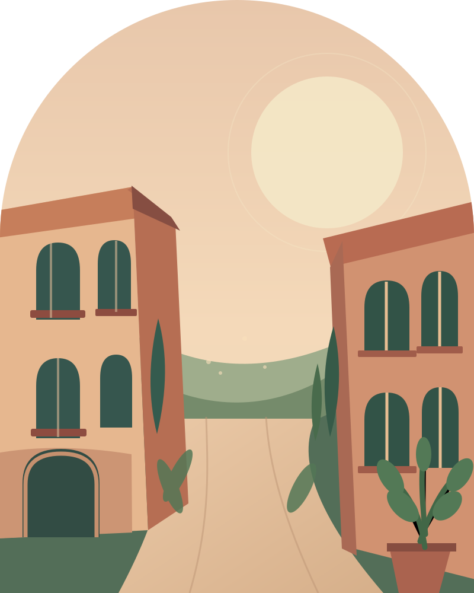
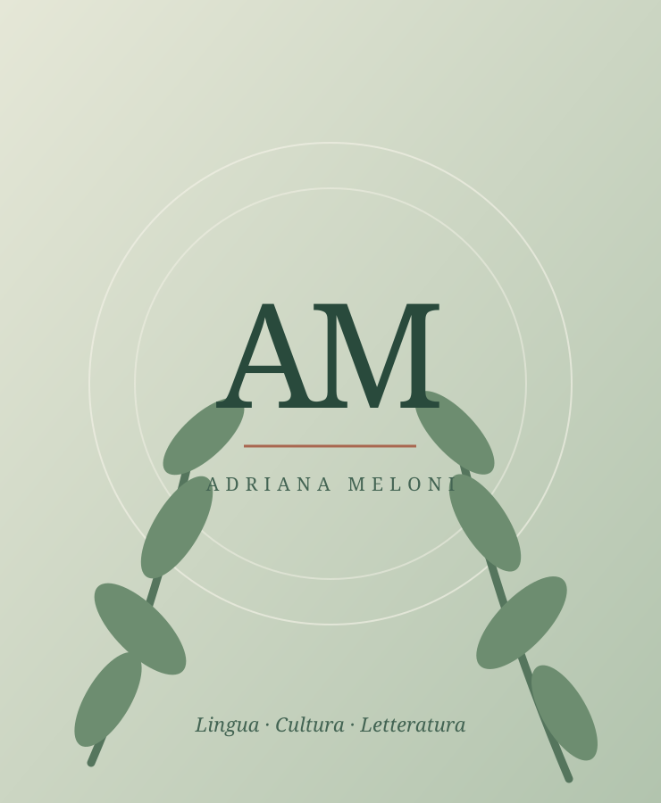

Italiano per tutti i livelli
Dalle basi ai livelli avanzati: lessico, grammatica, lettura, scrittura e sicurezza nell'uso della lingua.
Chiedi informazioniPiacere, sono Adriana Meloni. Insegno lingua e letteratura italiana con decenni di esperienza in Europa e in Israele. Ti accompagno in un percorso su misura: dai primi passi nella lingua fino alla preparazione della maturità o dell'esame B1 per la cittadinanza.
Per chi inizia, per chi vuole migliorare e per chi ama l'italiano

Un viaggio, gli studi, il lavoro, una nuova cittadinanza o semplicemente il piacere di conoscere una lingua straordinaria. Ogni percorso parte da te.
Dalle basi ai livelli avanzati: lessico, grammatica, lettura, scrittura e sicurezza nell'uso della lingua.
Chiedi informazioniPreparazione mirata per gli studenti delle scuole superiori, con esperienza specifica dal 2012.
Scopri come preparartiPreparazione linguistica specifica per chi deve sostenere l'esame di italiano B1 ai fini della cittadinanza italiana.
Informati sul percorsoPer chi vuole parlare con più naturalezza e scoprire la letteratura e la cultura italiana.
Parliamone insieme
Mi chiamo Adriana Meloni e sono docente di lingua e letteratura italiana. Ho cominciato a insegnare italiano a studenti stranieri in Francia, ancora prima di laurearmi in Lettere moderne a Strasburgo nel 1985, con una tesi dedicata al Rinascimento italiano e francese.
Dal mio arrivo in Israele, nel 2000, ho insegnato all'Open University, all'Istituto Italiano di Cultura di Tel Aviv e all'istituzione oggi nota come Università Reichmann di Herzliya. Ho inoltre tenuto conferenze di letteratura e, dal 2012, preparo studenti all'esame di maturità in italiano.
Ho approfondito la didattica dell'italiano come seconda lingua con un master presso l'Università per Stranieri di Perugia (2013) e una formazione presso l'Università di Siena per l'insegnamento e la valutazione dell'italiano B1 ai fini della cittadinanza (2020). Dal 2021 mi dedico alle lezioni private, costruendo percorsi adatti a studenti con obiettivi diversi.
Esperienza universitaria, preparazione agli esami e una profonda familiarità con la cultura italiana: tutto al servizio di lezioni costruite intorno alle tue esigenze.
Individuiamo il tuo livello e ciò che desideri raggiungere: conversazione, studio, lavoro, maturità o cittadinanza.
Ogni lezione tiene conto del punto di partenza e delle esigenze personali, da chi inizia a chi vuole perfezionarsi.
La lingua prende vita attraverso conversazione, lettura, letteratura e cultura italiana.
Alcune risposte utili sulle lezioni. Puoi anche scrivermi per raccontarmi che cosa vorresti imparare.
Certamente. Le lezioni sono rivolte a tutti i livelli, anche a chi non ha mai studiato italiano.
Sì. Dal 2012 preparo studenti alla maturità israeliana in italiano (Bagrut), anche grazie all'esperienza di insegnamento al liceo Ironi Alef di Tel Aviv.
Sì. Propongo una preparazione linguistica mirata al livello B1 richiesto nella procedura per la cittadinanza italiana.
Contattami e raccontami il tuo livello e i tuoi obiettivi. Potremo concordare insieme i dettagli e la modalità delle lezioni.
Raccontami perché vuoi imparare l'italiano e da quale livello parti. Sarò felice di conoscerti e di valutare insieme il percorso più adatto a te.
Bastano poche informazioni per preparare il tuo messaggio.
I recapiti per contattarmi saranno disponibili qui a breve. Torna a visitare questa pagina!